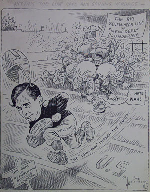
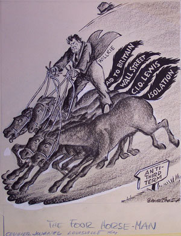

|

|

|
| Hitting the Hard Line and Gaining Yardage by Larimer | The Four Horse-man by Grover |
Wendell Willkie was FDR's Republican opponent. He was a former Democrat
who fought against the New Deal, both in the courts and in the court of public
opinion. He also attacked FDR for a lack of military preparedness. However
when FDR expanded military contracts, Willkie accused him of war-mongering,
even though Willkie opposed the GOP's isolationist wing. In an effort to counteract
his image of being a Wall Street lawyer and industrialist, Willkie was often
pictured at his farms, though he never worked on the farms, having bought
them only as investments.